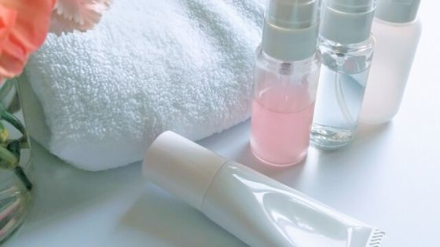

乾燥肌で合わないかも？刺激を抑える試験をしています
NULC 薬用スリープロテクトジェル（オールインワンジェル）


乾燥肌なんだけどスリープロテクトジェル使っても大丈夫？
私は敏感肌。スキンケア用品合うものがなかなかなくて・・
スリープロテクトジェルは乾燥肌や敏感肌に対する対策をしています。
それは嬉しいですね。
- 刺激性のテストに合格
- 刺激性の高い成分を使っていない
- 乾燥肌・敏感肌でもつかえる対策まとめ
乾燥肌・敏感肌でも使える対策
NULC 公式サイト
刺激性のテストに合格
ではお肌が敏感になっているときにはどのようなスキンケア化粧品を使ったらよいのでしょうか。
まずは、敏感肌向けに開発された低刺激性の化粧品を選びましょう。これらの化粧品では開発段階でお肌に刺激がないかを確認しており、さらに敏感肌の方が実際に使用して肌トラブルが起きないかどうかを確認する使用テストがおこなわれていることが多くあります。
パッチテスト済み、アレルギーテスト済みなどの表記も参考にしましょう。
引用元：NOV
このように刺激の少ないスキンケア化粧品の選び方としてパッチテストがおこなわれているのか？というのが重要になります。
このスリープロテクトジェルはもちろん刺激性に対するパッチテストを実施しているのです。
公式サイトにも表記されているので安心ですね。
NULC 公式サイト
試しに買ってみたけど合わなくて満足できない場合に全額返金も対応してくれるので、気になる方はこちらも見てください。

合わなかったら不安、とりあえず無料でお試ししたい！
リンク刺激性の高い成分を使っていない
- パラベン
- 界面活性剤（石油系）
- 合成着色料
- 鉱物油
- アルコール
- 香料
これらの肌へのダメージがある成分を使っていません。香料を使っていないので匂いも無臭ですね。
★敏感肌・乾燥肌って？
・細胞の中の水分を包んでいるあぶらのバランスが崩れて水分が外へ出て行ってしまう。
・細胞の中の水分を引き寄せる保湿ファクターが機能しなくなって、水分を引き留めれなくない。
・水分が飛んで行ってしまわないようにしている役割と外からの刺激から身を守るの皮膚膜の状態が悪い。
⇒この状態になると外からの刺激が肌の中に入り込んできたり、水分が外へ飛び出して行ったりしてしまい肌が乾燥し荒れてしまいます。
・細胞の中の水分を包んでいるあぶらのバランスが崩れて水分が外へ出て行ってしまう。
・細胞の中の水分を引き寄せる保湿ファクターが機能しなくなって、水分を引き留めれなくない。
・水分が飛んで行ってしまわないようにしている役割と外からの刺激から身を守るの皮膚膜の状態が悪い。
⇒この状態になると外からの刺激が肌の中に入り込んできたり、水分が外へ飛び出して行ったりしてしまい肌が乾燥し荒れてしまいます。
そしてスキンケア用品や化粧品を使った時に外から入り込んでくる刺激によって、肌がピリピリするわけですね。
★敏感肌・乾燥肌の原因は？
・刺激の強い化粧品・スキンケア用品を使ってしまう
・睡眠不足や栄養不足などの生活環境
・ダニや金属に肌が触れたり紫外線に肌を壊される
・遺伝や生まれつき
・刺激の強い化粧品・スキンケア用品を使ってしまう
・睡眠不足や栄養不足などの生活環境
・ダニや金属に肌が触れたり紫外線に肌を壊される
・遺伝や生まれつき
遺伝や生まれつきの場合は改善は難しいところもありますが、そうでなくお悩みの場合にはこの原因に注意してくださいね。
乾燥肌・敏感肌でもつかえる理由まとめ

敏感肌、乾燥肌って辛いですよね。
スキンケア選びも相当苦労されていると思います。
少しでもこの情報があなたのお役に立てているのであれば幸いです。
- NULC 薬用スリープロテクトジェル（オールインワンジェル）トップ
- NULC 薬用スリープロテクトジェル（オールインワンジェル）の効果
- NULC 薬用スリープロテクトジェル（オールインワンジェル）の使い方
- NULC 薬用スリープロテクトジェル（オールインワンジェル）の使うタイミング
- NULC 薬用スリープロテクトジェル（オールインワンジェル）は乾燥肌でも大丈夫？
- NULC 薬用スリープロテクトジェル（オールインワンジェル）の評価・評判・口コミ
- NULC 薬用スリープロテクトジェル（オールインワンジェル）の値段は安い？
- NULC 薬用スリープロテクトジェル（オールインワンジェル）と人気のジェルを比較
- NULC 薬用スリープロテクトジェル（オールインワンジェル）は子供にも使える？
- NULC 薬用スリープロテクトジェル（オールインワンジェル）は無料でお試しはできる？
- NULC 薬用スリープロテクトジェル（オールインワンジェル）の会社ナルク（NULC）とは？